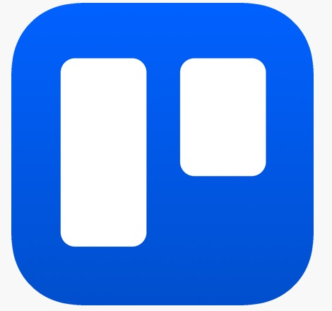
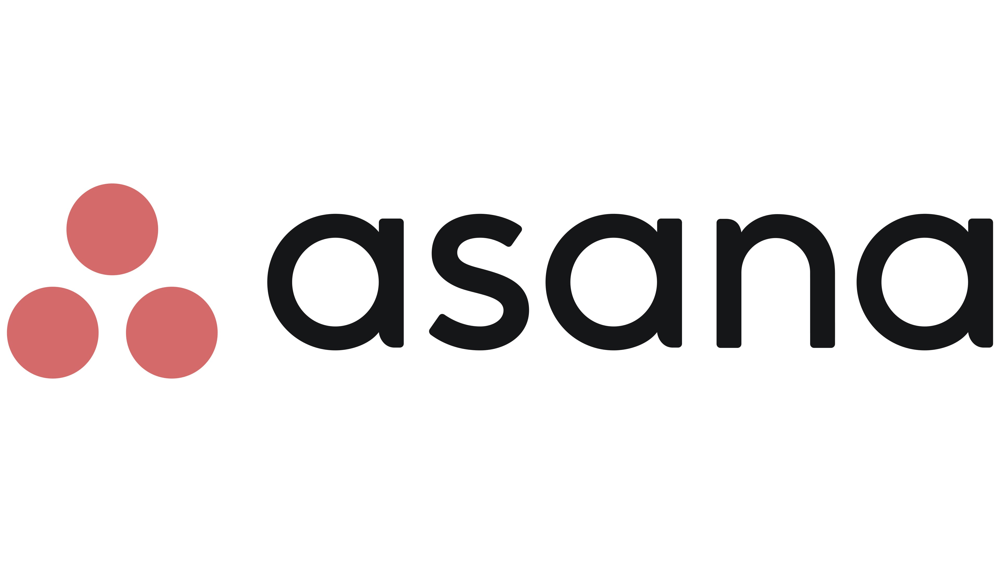
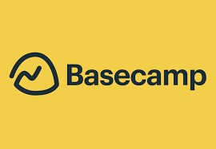

Project managers allows people on the internet to manage what they're doing, what they need to do, what is due, and what they have done for their project/business.
How project managers work
Project managers are used by individuals, teams or companies to keep track of stuff like objectives, work, tasks, things that needs of fixing and loads of other stuff.
This is a blank board, boards are the main body of project managers. You can put "cards" in the board, cards has crucial role as they can be identified as objectives or tasks to do.
Because I'm using Trello, cards can have pictures, attachments and have comments unlike other project managers like Asana, Jira and Microsoft Project.
I have just added in three cards in, just like how I explained how cards can be used for, these cards are obvious to be seen as objectives to be done, is in progress and what is completed.
Most users of project managers usually put dry, tiny detailed cards so that it won't take that much time managing objectives. Some put images or descriptions on the card so others would know the information about the objective that the card is holding. A few users go full "fashion-show-perfectionists" on the cards so the other team members in the workspace would get the full idea on what objectives is what.
This is what an average board looks like. Looks busy, right? This is the result of a good team working together, even if it looks busy, it looks clean and well-organized.
Popular project managers:
Trello - One of the most popular project managers, used by millions around the world. It is easy to use, easy to understand and easy to make managers with. Sometimes, users, which could also be devs, use Trello boards like a wiki, adding information in for people who plays their games or to read information about topics. Trello is best suited for small-medium teams as it is a simple, affordable and easy-to-use project manager. Another reason why it's popular is because it is so easy to use as it has a drag-and-drop feature for the cards, allowing users to easily put tasks that are completed, that are to do or that are still in progress together.
Asana - Asana is also a popular project manager, used by teams that wants a more flexible and have more collaboration in task management. Though, Asana's free plan is limited and advanced features are locked behind a paywall.
Jira - Jira is known for being a fast, agile project manager that allows teams to manage tasks and sprints easily. In summary, Jira allows teams to be more agile and efficient with time, completing tasks whole lot faster and sprints become easier.
Project managers that aren't that good:
 Basecamp - Basecamp maybe easy to use, but it lacks advanced tools or functions like time tracking, detailed reporting or other task management capabilties that bigger/more advanced teams need.
Monday.com - Monday.com can be too expensive compared to other tools like Trello. Users compain about how overwhelming and cluttered the interface is. It could be overkill for a small team.
Teamwork - Despite it having decent features, people complained about how cluttered the interface is and also how it lacks easy to use reporting and analytics tool.